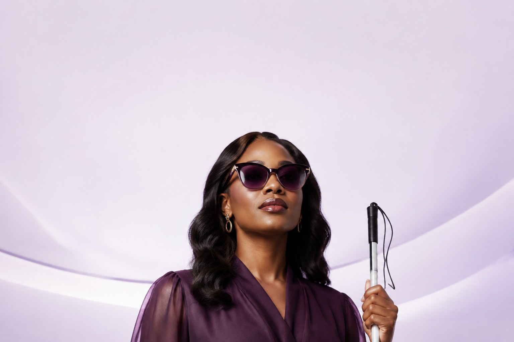
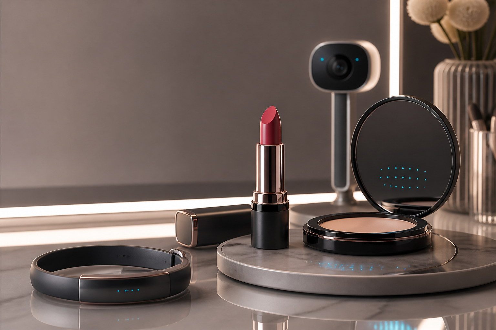

Changing the way the world experiences beauty
AI/AR technology built for accessible beauty, backed by real-time guidance

1st accessible makeup companion
Voice + haptic guidance
A L'Oreal beauty tech concept
KERASTASE
MICROSOFT
OPENAI
NYX
ARMANI beauty
MAYBELLINE
PRADA beauty
YSL
GARNIER
Beauty Reimagined in Real Time
当用户看不清口红边界、粉底均匀度或眼妆对称性时，系统用视觉识别理解当前动作， 用 AI 判断下一步，并通过自然语音与腕带震动把指导送到用户手上。

MAKEUP ACCESSIBILITY
Real-time guidance, true to every movement
MVP 聚焦口红引导：从人脸检测、唇部关键点识别，到误差计算、方向反馈和最终质检， 让一次化妆过程可以独立完成、可被验证、也更有安全感。
INTERACTIVE CONCEPT DEMO
口红边界识别
接下来要往左边多涂一点哦，左侧震动会提醒你。
此处展示模拟流程和示例指标。使用摄像头识别与中文语音，请点击下方实时体验入口；目前实时功能聚焦口红引导。
采集中
纠偏中
X +80
Y -60
HAPTIC OUTPUT
左侧马达 70%
LEFT
左侧震动 300ms
USER JOURNEY
One flow from setup to makeup quality check
01佩戴设备
02识别定位
03实时纠偏
04完成质检
1打开摄像头，戴上腕带
检测摄像头、扬声器、BLE 连接和腕带电量。
2拿出口红，坐好
视觉模型定位人脸、嘴唇区域和关键点。
3开始涂抹，实时纠偏
AI 判断 X/Y 偏差，并转化为语音与震动方向。
4用户调整后继续涂抹
持续识别，直到误差收敛到目标范围。
5用户停手，妆容质检
判断是否涂出边界、是否对称、是否需要补涂。
6夸夸陪伴，化妆完成
用自然语气给出完成确认和积极反馈。
Backed by product metrics
PRD 中的验收标准被转化为可演示指标，评审可以看到系统不是只会聊天， 而是在追踪完成率、误差、延迟和识别稳定性。
AGENT ARCHITECTURE
From perception to confidence
- 01多模态感知层
摄像头识别人脸、唇部和当前口红位置。
- 02意图识别模块
用户正在进行口红涂抹，需要起始点和边界提醒。
- 03任务规划模块
比较目标位置与当前动作，生成方向建议。
- 04结果生成模块
输出语音提醒和腕带震动指令。
人脸检测98%
关键点识别94%
姿态稳定良好
MVP INCLUDES
完整实时闭环
- 摄像头视频采集与状态检测
- 人脸、唇部、关键点识别
- X/Y 误差计算与方向判断
- 语音提醒、夸夸陪伴、触觉反馈
NEXT
后续生态扩展
- 完整实体硬件工业设计
- 复杂人格与长期记忆
- 离线 RAG 与大规模内容体系
- 社区、游戏化和产品识别生态